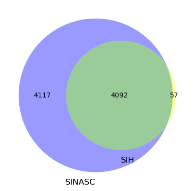
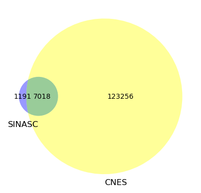
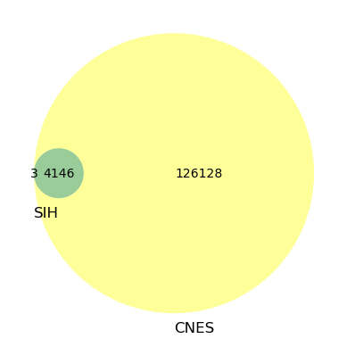

import os
import sqlite3
import pandas as pd
from tqdm import tqdm
from pathlib import Path
from zipfile import ZipFile
from datatable import dt, f, by
import matplotlib.pyplot as plt
from matplotlib_venn import venn2, venn3
from plotly import express as px, io as pio
pd.options.plotting.backend = 'plotly'
pio.renderers.default = 'plotly_mimetype+notebook_connected'CNES
Bases de Dados
CNES
path_zip_cnes = f'{Path.home()}/Databases/CNES/CNES.csv.gzip'
df_cnes = dt.fread(path_zip_cnes)
df_cnes = df_cnes[:, dt.count(), by('cnes')].sort(-f.count).to_pandas()
n_cnes = df_cnes.shape[0]
df_cnes| cnes | count | |
|---|---|---|
| 0 | 2000016 | 163 |
| 1 | 2000024 | 163 |
| 2 | 2000040 | 163 |
| 3 | 2000059 | 163 |
| 4 | 2000067 | 163 |
| ... | ... | ... |
| 130269 | 9715541 | 1 |
| 130270 | 9715568 | 1 |
| 130271 | 9715576 | 1 |
| 130272 | 9715584 | 1 |
| 130273 | 9715606 | 1 |
130274 rows × 2 columns
SINASC
path_zip_sinasc = f'{Path.home()}/Databases/SINASC/SINASC.csv.gzip'
df_cnes_sinasc = dt.fread(path_zip_sinasc)
df_cnes_sinasc = df_cnes_sinasc[:, dt.count(), by('cnes')].sort(-f.count).to_pandas()
n_sinasc = df_cnes_sinasc.shape[0]
df_cnes_sinasc| cnes | count | |
|---|---|---|
| 0 | 2079542 | 145885 |
| 1 | 3037274 | 115195 |
| 2 | 2232 | 104344 |
| 3 | 26794 | 103932 |
| 4 | 2323397 | 101349 |
| ... | ... | ... |
| 8204 | 9491252 | 1 |
| 8205 | 9505253 | 1 |
| 8206 | 9569723 | 1 |
| 8207 | 9619488 | 1 |
| 8208 | 9728317 | 1 |
8209 rows × 2 columns
SIH
path_zip_sih = f'{Path.home()}/Databases/SIHSUS/SIHSUS.csv.gzip'
df_cnes_sih = dt.fread(path_zip_sih)
df_cnes_sih = df_cnes_sih[:, dt.count(), by('cnes')].sort(-f.count).to_pandas()
n_sih = df_cnes_sih.shape[0]
df_cnes_sih| cnes | count | |
|---|---|---|
| 0 | 2232 | 101955 |
| 1 | 3151794 | 75209 |
| 2 | 2323397 | 74712 |
| 3 | 2311682 | 64833 |
| 4 | 26794 | 63700 |
| ... | ... | ... |
| 4144 | 7320175 | 1 |
| 4145 | 7603029 | 1 |
| 4146 | 7621442 | 1 |
| 4147 | 7704364 | 1 |
| 4148 | 7743068 | 1 |
4149 rows × 2 columns
Interseção
SINASC & SIH
Lista dos CNES
sinasc_sih = df_cnes_sinasc.merge(df_cnes_sih, on='cnes', how='inner', suffixes=('_sinasc', '_sih'))
n_sinasc_sih = sinasc_sih.shape[0]
sinasc_sih| cnes | count_sinasc | count_sih | |
|---|---|---|---|
| 0 | 2232 | 104344 | 101955 |
| 1 | 26794 | 103932 | 63700 |
| 2 | 2323397 | 101349 | 74712 |
| 3 | 2022621 | 99602 | 28260 |
| 4 | 2311682 | 87673 | 64833 |
| ... | ... | ... | ... |
| 4087 | 2796597 | 1 | 63 |
| 4088 | 5590663 | 1 | 13 |
| 4089 | 6452302 | 1 | 98 |
| 4090 | 6559379 | 1 | 2 |
| 4091 | 7006438 | 1 | 18 |
4092 rows × 3 columns
Venn
c = venn2(
subsets = (
n_sinasc - n_sinasc_sih,
n_sih - n_sinasc_sih,
n_sinasc_sih,
), set_labels = ('SINASC', 'SIH'),
set_colors=('blue', 'yellow'))
c.get_patch_by_id('11').set_color('green')
c.get_patch_by_id('11').set_edgecolor('none')
c.get_patch_by_id('11').set_alpha(0.4)
plt.show()
SINASC & CNES
Lista dos CNES
sinasc_cnes = df_cnes_sinasc.merge(df_cnes, on='cnes', how='inner', suffixes=('_cnes', '_sinasc'))
n_sinasc_cnes = sinasc_cnes.shape[0]
sinasc_cnes| cnes | count_cnes | count_sinasc | |
|---|---|---|---|
| 0 | 2232 | 104344 | 162 |
| 1 | 26794 | 103932 | 162 |
| 2 | 2323397 | 101349 | 162 |
| 3 | 2022621 | 99602 | 162 |
| 4 | 2311682 | 87673 | 162 |
| ... | ... | ... | ... |
| 7013 | 9208968 | 1 | 21 |
| 7014 | 9322825 | 1 | 17 |
| 7015 | 9491112 | 1 | 10 |
| 7016 | 9491252 | 1 | 10 |
| 7017 | 9619488 | 1 | 4 |
7018 rows × 3 columns
Venn
c = venn2(
subsets = (
n_sinasc - n_sinasc_cnes,
n_cnes - n_sinasc_cnes,
n_sinasc_cnes,
), set_labels = ('SINASC', 'CNES'),
set_colors=('blue', 'yellow'))
c.get_patch_by_id('11').set_color('green')
c.get_patch_by_id('11').set_edgecolor('none')
c.get_patch_by_id('11').set_alpha(0.4)
plt.show()
4117-11912926SIH & CNES
Lista dos CNES
sih_cnes = df_cnes_sih.merge(df_cnes, on='cnes', how='inner', suffixes=('_cnes', '_sih'))
n_sih_cnes = sih_cnes.shape[0]
sih_cnes| cnes | count_cnes | count_sih | |
|---|---|---|---|
| 0 | 2232 | 101955 | 162 |
| 1 | 3151794 | 75209 | 162 |
| 2 | 2323397 | 74712 | 162 |
| 3 | 2311682 | 64833 | 162 |
| 4 | 26794 | 63700 | 162 |
| ... | ... | ... | ... |
| 4141 | 7320175 | 1 | 66 |
| 4142 | 7603029 | 1 | 52 |
| 4143 | 7621442 | 1 | 51 |
| 4144 | 7704364 | 1 | 47 |
| 4145 | 7743068 | 1 | 45 |
4146 rows × 3 columns
Venn
c = venn2(
subsets = (
n_sih - n_sih_cnes,
n_cnes - n_sih_cnes,
n_sih_cnes,
), set_labels = ('SIH', 'CNES'),
set_colors=('blue', 'yellow'))
c.get_patch_by_id('11').set_color('green')
c.get_patch_by_id('11').set_edgecolor('none')
c.get_patch_by_id('11').set_alpha(0.4)
plt.show()
(SINASC & CNES) not in SIH
df_info_cnes = pd.read_csv(path_zip_cnes)
sinasc_cnes_sih = sinasc_cnes.merge(df_cnes_sih, on='cnes', how='inner', suffixes=('_sinasc_cnes', '_sih'))
s_cnes = set(sinasc_cnes_sih['cnes'])
s_cnes = set(sinasc_cnes[~sinasc_cnes['cnes'].isin(s_cnes)]['cnes'])
print(len(s_cnes))
inpect_cnes = df_info_cnes[df_info_cnes['cnes'].isin(s_cnes)]
inpect_cnes = inpect_cnes.sort_values(by=['cnes'], ignore_index=True)
inpect_cnes['cnes'] = inpect_cnes['cnes'].apply(lambda x: ('0' * 7 + str(x))[-7:])
inpect_cnes2928| cnes | uf | cod_mun | esfera_adm | retencao_tributos | tipo_retenção | natureza | |
|---|---|---|---|---|---|---|---|
| 0 | 0000035 | PE | 260290.0 | NaN | NaN | NaN | NaN |
| 1 | 0000035 | PE | 260290.0 | MUNICIPAL | Estabelecimento PUBLICO | Estabelecimento PUBLICO | Administração Direta da Saúde (MS, SES, e SMS) |
| 2 | 0000183 | PE | 260290.0 | PRIVADA | Estabelecimento PRIVADO LUCRATIVA | NaN | Empresa Privada |
| 3 | 0000221 | PE | 260290.0 | PRIVADA | Estabelecimento PRIVADO LUCRATIVA | NaN | Empresa Privada |
| 4 | 0000426 | PE | 261160.0 | ESTADUAL | Estabelecimento PUBLICO | Estabelecimento PUBLICO | Administração Direta da Saúde (MS, SES, e SMS) |
| ... | ... | ... | ... | ... | ... | ... | ... |
| 5728 | 9541004 | GO | 521020.0 | NaN | NaN | NaN | NaN |
| 5729 | 9546146 | RJ | 330630.0 | NaN | NaN | NaN | NaN |
| 5730 | 9548149 | GO | 520450.0 | NaN | NaN | NaN | NaN |
| 5731 | 9551476 | PE | 261060.0 | NaN | NaN | NaN | NaN |
| 5732 | 9619488 | AP | 160027.0 | NaN | NaN | NaN | NaN |
5733 rows × 7 columns
# inpect_cnes.to_excel('inspect_cnes.xlsx')Repetidos
inpect_cnes['cnes'].value_counts().hist()